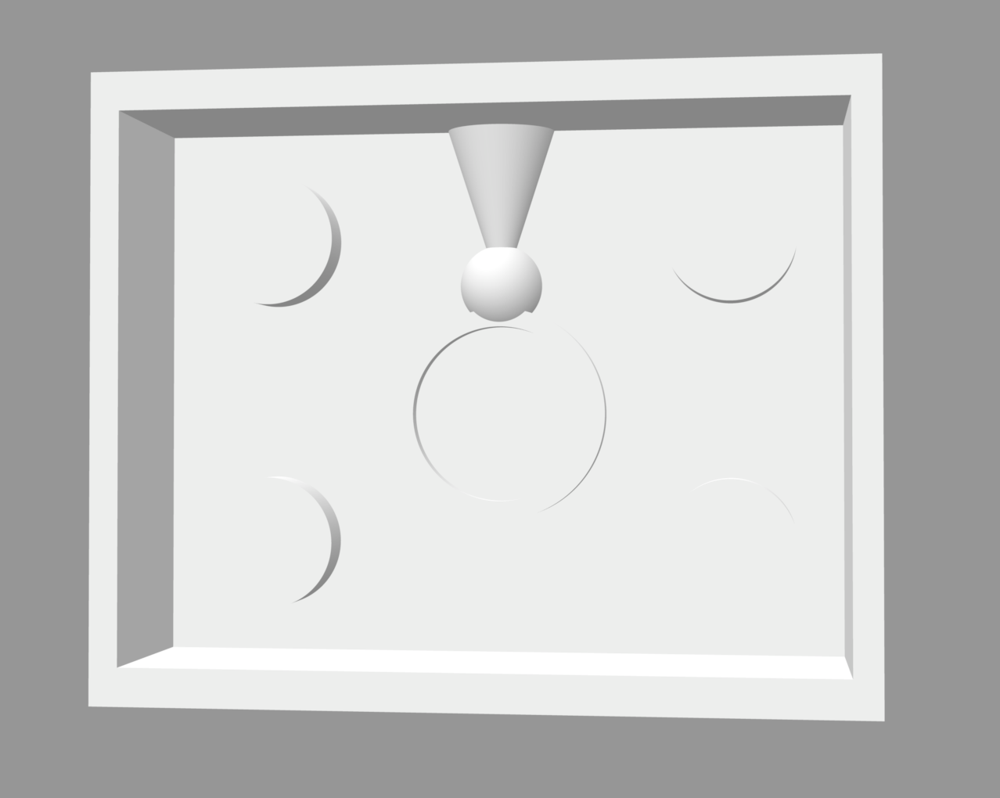
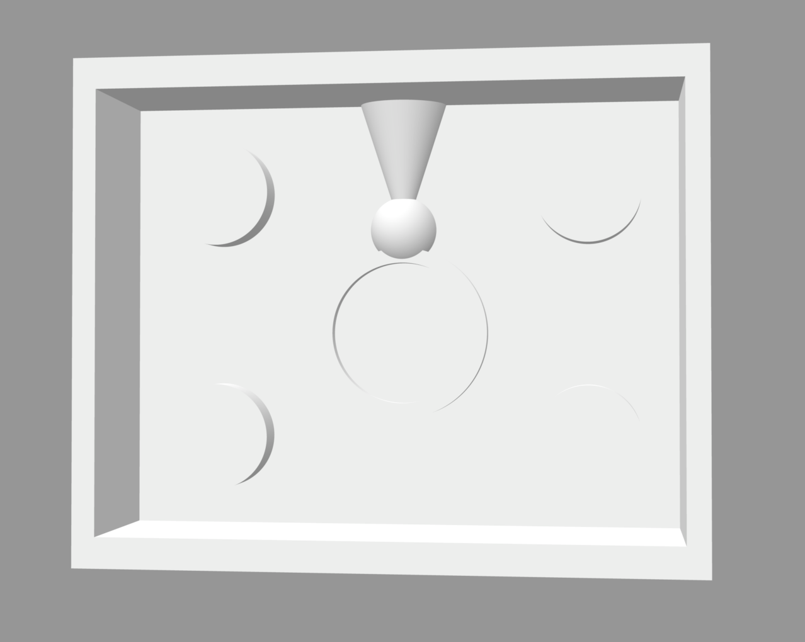

Steps
1
For part 1 of molding and casting, I decided I wanted to make a simple ring. I started off by making measurements of my finger and coming up with a measurement for the ring center:

2
Then I moved into Rhino and created a ring mold. To do this, I:
- created a simple ring by joining a tube and sphere with the measurement from above
- added a sprue to the top of the sphere for pouring
- created a box with extruded rectangles/cubes around the ring
- created a plane to split the ring & box - the parting line was easy to spot without any special measures
- added a bottom to the boxes and created cylinders to union/difference for keys

- created a simple ring by joining a tube and sphere with the measurement from above
- added a sprue to the top of the sphere for pouring
- created a box with extruded rectangles/cubes around the ring
- created a plane to split the ring & box - the parting line was easy to spot without any special measures
- added a bottom to the boxes and created cylinders to union/difference for keys

3
After that, I printed the top and bottom mold! They ~mostly~ turned out well, but unfortunately I moved the plate ~8 hours in, so the very top of the second mold isn't finished on top, but there was plenty of space for the silicone so I decided it was alright.


4
After that, I mixed the silicone and poured them into the mold makers!

5
Once the silicone was dry, I removed the molds from the 3d printed pieces
And I tried out an ice casting, which failed miserably :)
And I tried out an ice casting, which failed miserably :)
6
After that, I eyeballed the plaster measurements, mixed, used rubber bands to hold the mold together, and poured into the mold:
7
I repeated this process until I had 4 good rings cast out of the plaster!
Resources
My creations:
Ring mold 3dm
Ring mold stl 1
Ring mold stl 2
External resources:Google answer
NExT Lab
Sprue Wikipedia
Rhino documentation
Juxtamorph
Safety sheet
Data sheet
Thanks to the various posts in the Discord channel for the help! Especially for posts from Junchao about mold making, Andy's question and screenshot which was super helpful, and Noelle's tips & tricks (e.g., ironing)